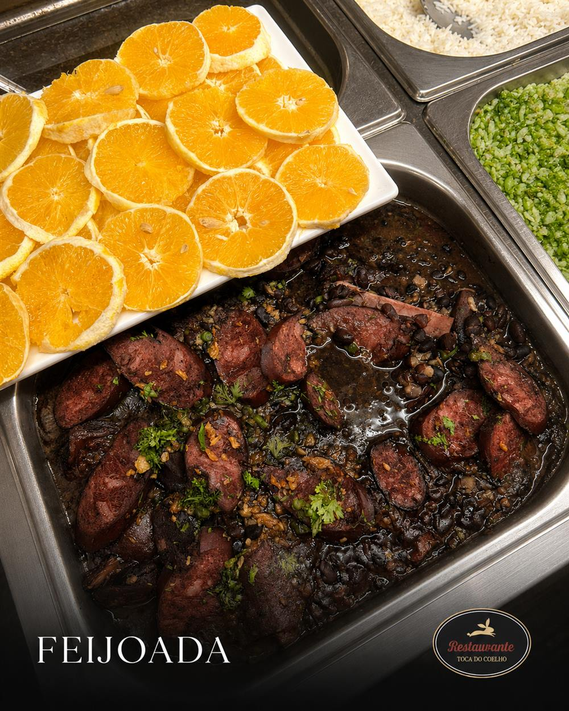
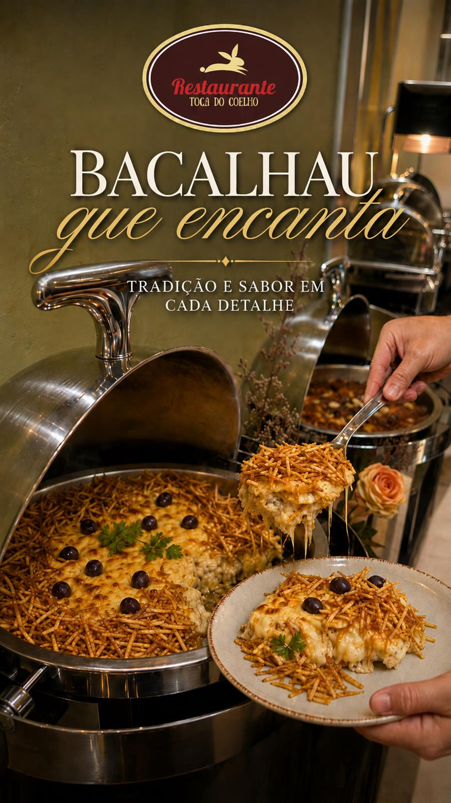
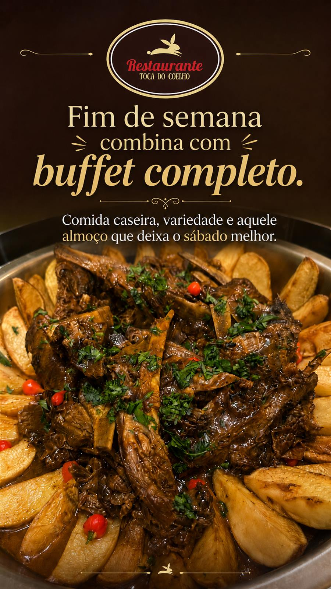
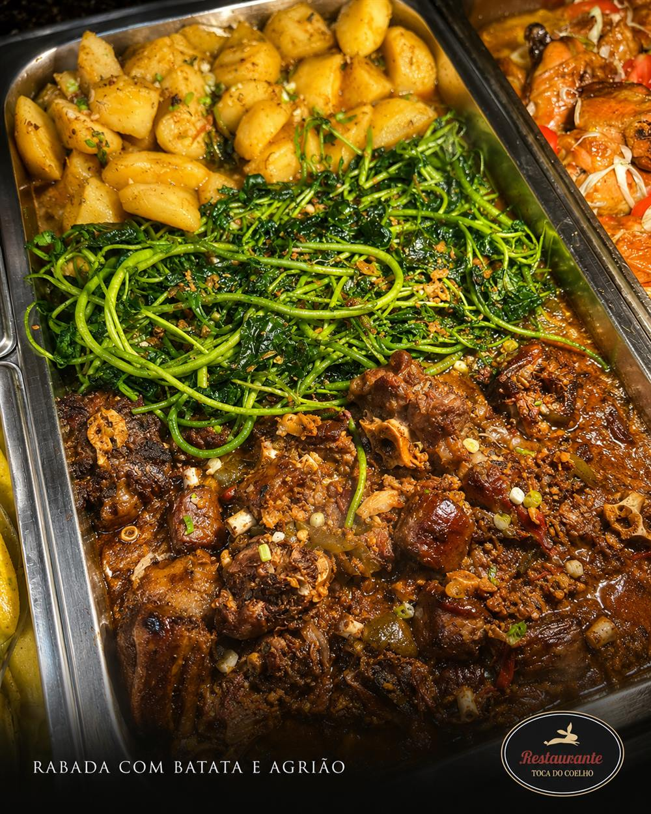
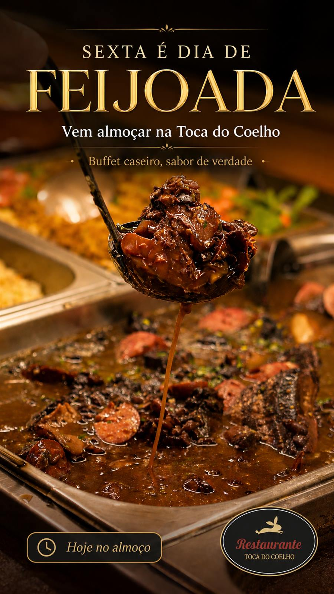
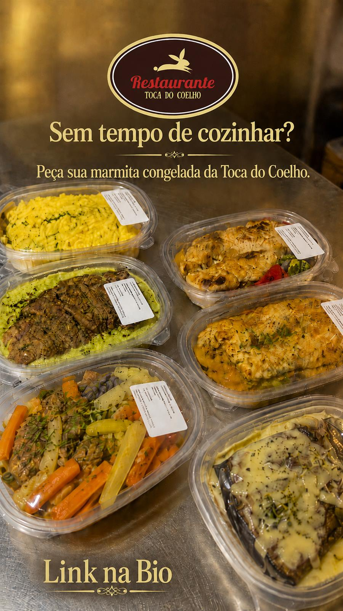
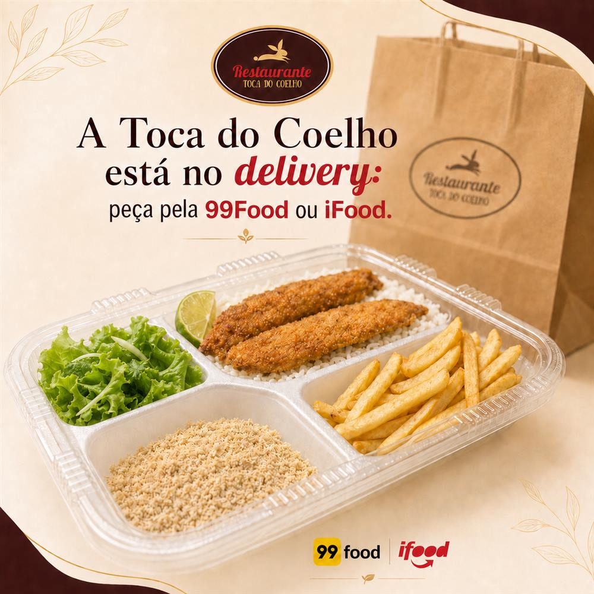

Restaurante · São Gonçalo, RJ
Toca do Coelho
Buffet caseiro, sabor de verdade. Self-service a quilo todos os dias — com feijoada às sextas, frutos do mar aos domingos e aquele tempero que cuida de você.
Self-service a quilo
Você se serve, do seu jeito
Cardápio variado todos os dias: grelhados, assados, tortas quentes, massas, saladas diversas e muito mais. O cardápio muda diariamente para trazer sempre novidades — e a comida é caseira, feita na casa.
Pagamento: crédito, débito, Pix, dinheiro e vale-refeição (Alelo, Ticket, VR, Pluxee e outras bandeiras).
Direto do nosso buffet
Pratos que fazem fama






Marmitas fit congeladas
Sem tempo de cozinhar?
Marmita congelada, comida de verdade: é só aquecer e aproveitar. Porções de 350g preparadas na casa para organizar a sua semana.
- Sabores como frango grelhado, frango ao molho mostarda com ervas e berinjela à parmegiana
- Peça pelo WhatsApp e retire na Toca — ou consulte a entrega
- Veja o portfólio completo com todos os sabores

Delivery
Receba a Toca em casa
Seu almoço favorito no delivery, pronto para aproveitar. Pedidos exclusivamente pelos aplicativos:
Eventos
Venha fazer seu evento na Toca
Sabores que reúnem, momentos que ficam. Um espaço aconchegante, com comida de qualidade e ambiente perfeito para aniversários, confraternizações e comemorações em família.
- Espaço aconchegante
- Comida de qualidade
- Ideal para eventos e grupos
Visite-nos
Fácil de chegar, difícil de esquecer
📍 Endereço
Rua Capitão Juvenal Figueiredo, 71 — Coelho
São Gonçalo · RJ (junto à RJ-104)
🕚 Horários
Segunda a quinta: 11h às 15h30
Sexta a domingo: 11h às 16h
Feriados: funcionamento normal
🚗 Estacionamento
Há espaço em frente ao restaurante. Como a RJ-104 tem grande fluxo, recomendamos chegar com antecedência.
💳 Pagamento
Crédito, débito, Pix, dinheiro e vale-refeição (Alelo, Ticket, VR, Pluxee e outras).
Perguntas frequentes
Tudo o que você quer saber
Quanto custa o quilo?
Segunda a sexta: R$ 64,99/kg. Sábados, domingos e feriados: R$ 89,99/kg.
Qual o horário de funcionamento?
Aberto todos os dias no almoço: segunda a quinta das 11h às 15h30 e de sexta a domingo das 11h às 16h. Em feriados funcionamos normalmente.
Têm marmitas fit?
Sim! Marmitas fit congeladas de 350g, pedidas pelo WhatsApp. Retire na Toca ou consulte a entrega. Veja o portfólio completo.
Aceitam vale-refeição?
Aceitamos Alelo, Ticket, VR, Pluxee e outras bandeiras — além de crédito, débito, Pix e dinheiro. Recomendamos confirmar a bandeira na chegada.
Precisa reservar mesa?
No dia a dia o atendimento é por ordem de chegada, sem reservas. Para eventos e datas especiais, fale com a gente pelo WhatsApp.
Posso levar bebida de fora?
Não é permitido trazer bebida de fora. Temos sucos em copo e jarra e refrigerantes de até 500ml em alguns sabores.
Tem estacionamento?
Não temos estacionamento próprio, mas há espaço em frente ao restaurante, junto à RJ-104. Recomendamos chegar com antecedência.